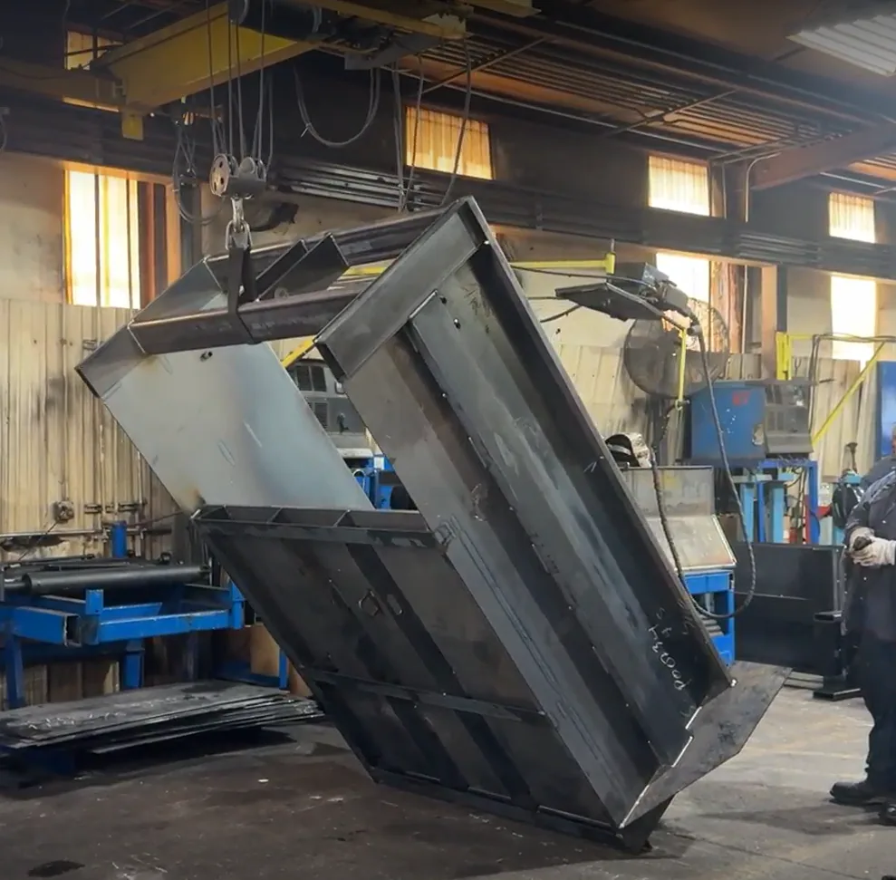
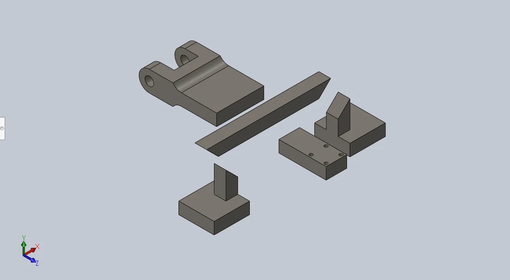
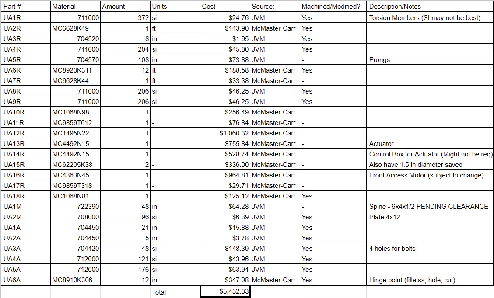

A 2,000 lb powered mechanism that rotates production chassis 180° without tying up the overhead crane. Sponsored by JVM / Cram-A-Lot, designed and built by a team of six, and handed over to the sponsor in April 2026.
JVM rotates welded steel chassis during production. Their existing method hung the chassis from the facility's overhead crane and winch and let an operator turn it by hand with a remote. It worked, but it put cyclic wear on the winch cables, occupied a crane that the rest of the shop needed, and put a person close to a suspended 2,000 lb load.
Cram-A-Lot asked for a dedicated machine: rotate the chassis a full 180°, take the crane out of the loop, shrink the floor space it needs, and keep the operator at a safe distance — all for under $7,500 and manufacturable in their own shop.

| Requirement | Target | Delivered |
|---|---|---|
| Rotation | 180° ± 10° | Met |
| Load capacity | ≥ 2,000 lb | Met |
| Chassis configurations | 4 sizes | Met — modular arms |
| Footprint | 8 ft × 5 ft | Met |
| Crane dependency | Eliminate from rotation | Met |
| Operator standoff | ≥ 3 ft | Met |
| Cycle time | ≤ 5 min | Met |
| Power | 480 V 3-phase | Met |
| Budget | ≤ $7,500 | $5,432 |
| Manufacturable in-house | UARK or JVM facilities | Met |
Governing standard: ASME B30.20, Below-the-Hook Lifting Devices.
The chassis loads onto long forks, a top arm swings down to clamp it, and a gearmotor driving the central rotator plate turns the whole assembly through 180°. An electric actuator drives the top arm; a counterweight keeps the plate balanced through the arc.
These are the real STL exports from the SolidWorks models, not illustrations. Drag to orbit, scroll to zoom, and toggle the wireframe. The dimensions under each part are measured off its mesh at load time, and the part numbers match the costed BOM.

This was a six-person team, and the analysis work was split by component. The two analyses below — the central pin and the clevis mount — are mine, start to finish: load case, hand calculations, FEA setup, and the sizing recommendation the team built to.
The upper-arm analysis was Diana Trujillo's and the restraining-arm analysis was Aidan Rheay's; both are summarized here because the system-level story does not make sense without them. Full team: Cole McCallum, Cooper Ulrich, Maverick Wynn, Diana Trujillo, Aidan Rheay and myself.
This pin holds the third top arm onto the rotator plate. If it fails, the arm lets go and drops a 2,000 lb chassis — so it gets the most conservative treatment of anything on the machine. I ran it at 9,192.96 lbf in single shear across three candidate diameters, checking shear, bearing and von Mises by hand and then confirming with SolidWorks Simulation.
The same hand calculation I ran for the report, made continuous. Move the diameter and watch the margin change.
At the 1.5 in diameter we selected, the hand calculation gives FOS 6.41 but SolidWorks reports a minimum of 1.6. That gap is not an error in either one — they are answering different questions.
The hand calculation treats shear as uniform over the pin cross-section and bearing as uniform over the projected contact area. The FEA resolves the real contact patch, where stress concentrates sharply at the edges of the bearing surface and the mesh reports a local peak that a nominal-stress calculation cannot see. Refining the mesh at a contact edge drives that peak higher without ever converging, which is the classic mesh-singularity signature.
So the honest reading is: nominal margin is very large, and the local peak still clears yield with 1.6 to spare. We took the 1.5 in pin over the 1 in — which the hand calc alone would have passed at 2.86 — precisely because the FEA showed how quickly the local peak grows as diameter drops.
The clevis mount ties the electric actuator to the third arm — it takes the actuator force plus the chassis weight every time the arm swings. I modeled the 1 in weld-on mount to its catalog dimensions and loaded it at the full 2,000 lbf static case.
The result was under half a millimeter of deflection and a factor of safety of roughly 53.5 against yield. That is heavily overbuilt, which is the correct outcome for an off-the-shelf part in a load path where failure drops the chassis. The valuable finding was not the number itself but the confirmation that the mount was not the weak link, which let the team concentrate on the arm and the pin.
Across the whole machine, the arms govern — not the fasteners or the mounts. The upper arm at 90° of rotation is where the margin is thinnest, and it is the component the team flagged for redesign.
| Component | Analyst | Load case | Min FOS | Max deflection |
|---|---|---|---|---|
| Central pin, 1.5 in | Grant Leyda | 9,192.96 lbf shear | 1.6 | — |
| Clevis mount | Grant Leyda | 2,000 lbf static | 53.5 | < 0.5 mm |
| Upper arm | Diana Trujillo | 1,607 lbf @ 90° | 1.32 | 0.662 in |
| Lower arm | Diana Trujillo | 1,607 lbf @ 90° | high | 0.027 in |
| Restraining arm | Aidan Rheay | 1,957 lbf @ 90° / 180° | 3.6 | 0.023 in |
Diana's own FEA on the upper and lower arm at 90°, the position where the load is worst. These are her original result plots, not a re-render.
The deflection concentrates at the fork tips, where there is no support — 0.662 in at worst, against an upper-arm FOS of 1.32 versus the 1.67 ASD reference. Thickening the arms was the team's recommended fix.
Spring 2026 was the build. We sourced material and hardware, machined parts at both the University of Arkansas machine shop and JVM's own facility, and assembled and tested the finished system in the sponsor's warehouse.
Twenty-six line items across McMaster-Carr hardware and JVM stock steel, costed per unit and totaling $5,432.33 — comfortably inside the $7,500 budget, with the gearmotor and actuator as the two dominant costs.

The machine was delivered, load-tested and handed over on schedule. It rotates the chassis 180°, it holds 2,000 lb, it fits the footprint, and it came in $2,068 under budget. Every deadline and deliverable landed on time.
Deflection in the arms came in higher than we predicted. The upper arm's factor of safety of 1.32 sits below the 1.67 ASD reference we were benchmarking against — it does not fail, and it has margin over yield, but it is thinner than we wanted.
Our handover recommendation was threefold: increase the shaft size, redesign the bearing mount, and add a guide rail to absorb some of the deflection in the arm. Separately, McMaster lead times ran longer than planned and compressed the fabrication and testing window — on the next one I would order long-lead hardware before the design is fully frozen, and accept a little rework, rather than serializing procurement behind a finished drawing package.
The lesson I took from the pin study in particular is that a hand calculation and an FEA disagreeing by a factor of four is not a problem to be settled by choosing the more favorable number. Understanding why they disagree is what revealed how the part actually fails, and that understanding is what drove the sizing decision.